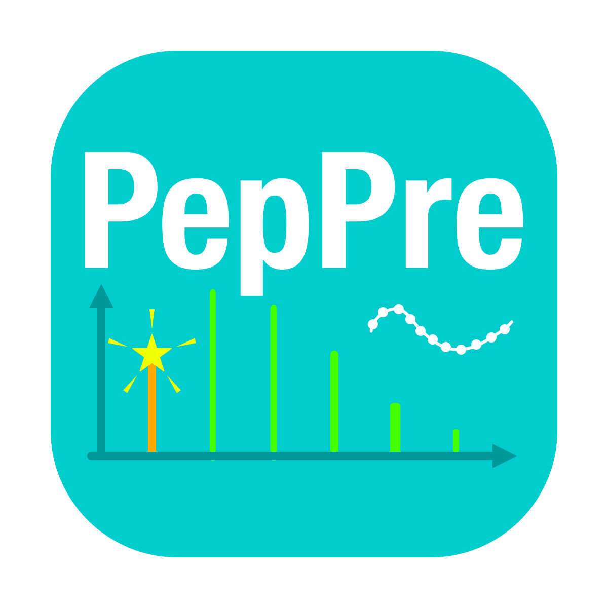
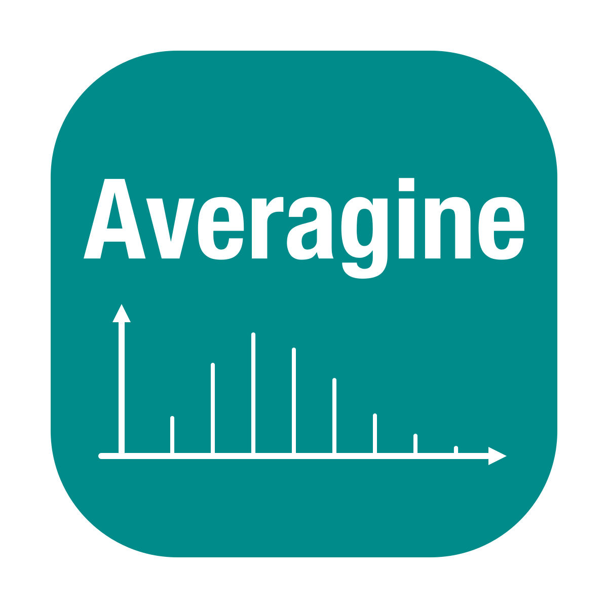

Software
-

PepPre
detect peptide precursors from LC-MS map to promote peptide identification, validation, etc. -

PepFeat
detect peptide features from LC-MS map, and align peptide features of multiple runs (to measure retention time variation) -

ThermoRawRead
extract mass spectrometry data from RAW files of Thermo Fisher instruments -
MgfRead
convert MGF files to compatible formats -

Averagine Model Viewer
online utility to visualize isotope pattern of peptide based on averagine model
Education
-
Institute of Computing Technology, Chinese Academy of Sciences
-
School of Computer Science and Technology, Shandong University
Publication
-
(^: co-first author, *: corresponding author)
-
PepPre: Promote Peptide Identification Using Accurate and Comprehensive Precursors
-
Comparative Analysis of Chemical Cross-Linking Mass Spectrometry Data Indicates That Protein STY Residues Rarely React with N-Hydroxysuccinimide Ester Cross-Linkers
-
pDeep3: Toward More Accurate Spectrum Prediction with Fast Few-Shot Learning
-
Reductive Clustering: An Efficient Linear-time Graph-based Divisive Cluster Analysis Approach